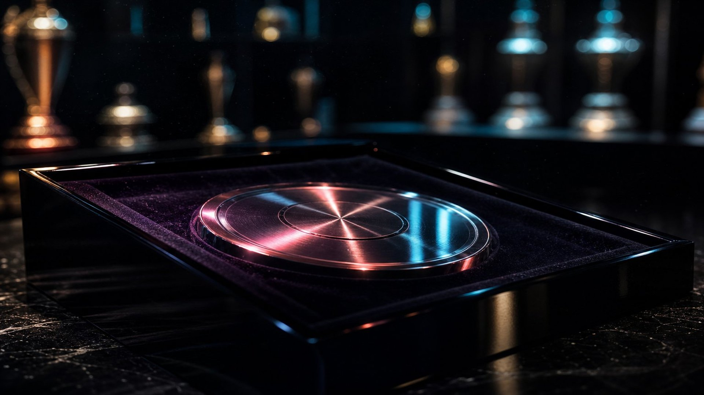
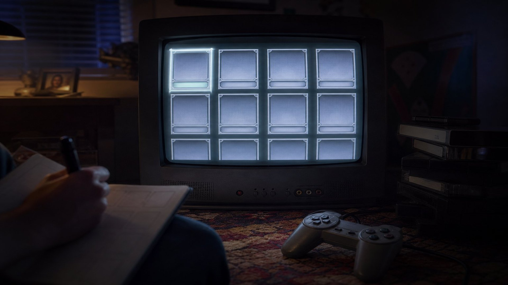

S4 · G6 · Complétion
Trophées et succès
55 trophées, un platine nommé « Vice Got a Price! », et une checklist 100 % bien plus clémente qu'elle n'y paraît. Un seul point est réellement manquable — et il se joue au chapitre 1.
Vue d'ensemble
La liste est simple dans sa structure : six trophées d'histoire, six de mission nommée, et le reste en contenu annexe. Aucun trophée en ligne, puisque le mode n'existe pas.
55 trophées
28 cachés, 27 visibles, sur PS5 et Xbox Series X|S. TRO-17
2 trophées d'or
La mission finale et le 100 %. Le platine mis à part, tout le reste est bronze ou argent. TRO-21
Zéro trophée manquable
Pour la complétion : tout reste faisable en libre après l'histoire. TRO-23
TRO-18
Trophées d'histoire
Tous automatiques, tous impossibles à manquer. Attention : les noms de chapitres et de missions ci-dessous dévoilent la structure narrative.
| Trophée | Déclencheur | Réf. |
|---|---|---|
| Just Like Paradise | Terminer « Gone Fishing » | TRO-19 |
| Paradise Lost | Terminer le chapitre 1 | TRO-19 |
| T**s Ass Drug Money | Terminer le chapitre 2 (nom censuré sur les trackers) | TRO-19 |
| Vice City, Baby! | Terminer le chapitre 3 | TRO-19 |
| Top Of The World, Ma | Terminer le chapitre 4 | TRO-19 |
| You Gotta Know When to Get Off | Terminer la mission finale — or | TRO-21 |
| Trophée | Mission | Réf. |
|---|---|---|
| Trust | Breakfast Run | TRO-20 |
| Break the Bank | The Cartel Heist | TRO-20 |
| Family Matters | Child's Play | TRO-20 |
| DWNFALL | Headliners | TRO-20 |
| Hi-Jacked | VCIA Takedown | TRO-20 |
| Snow Storm | Operation Savage Glory | TRO-20 |
Les trophées de contenu
Le gros du travail. Chaque ligne indique le déclencheur réel, pas une paraphrase.
| Trophée | Déclencheur |
|---|---|
| A Long Road | Atteindre 100 % de complétion — or |
| Cunning Stunts | Terminer 250 cascades |
| Master of None | Essayer chaque type d'activité au moins une fois |
| The Shootist | Médaille d'or sur tous les défis du stand de tir |
| Top Fun | Gagner une course de drones à chaque emplacement |
| Earn Cash, Not Kudos | Gagner 20 courses différentes |
| Baited My Tackle | Battre Cal à un défi de pêche |
| Stick Fiddler | Terminer un jeu d'arcade |
| Strangers & Freaks | Terminer 8 fils de missions d'inconnus dans l'État |
| Positive Mental Attitude | Méditer sur tous les spots de Leonida |
| Don't Touch My Deck | Compléter 3 sets de cartes à collectionner |
| You WAiNKer! | Scanner 100 lieux avec l'application WAiNK |
| One Last Thing | Terminer 50 défis |
| Whip It Good | Découvrir 100 véhicules |
| The Goodtime State | Explorer tout Leonida |
| Trophée | Déclencheur |
|---|---|
| Hot Together | Perdre 4 étoiles de recherche avec son équipier et sortir de la zone |
| Retail Therapy | Braquer 3 boutiques d'affilée à deux sans perdre la recherche |
| Gunslinger | Abattre 5 ennemis en un seul usage du Focus de combat |
| Sneakthief | Braquer une bijouterie sans être détecté |
| Maximum Withdrawal | Braquer 5 coffres de banque et s'échapper |
| A Classic Blitz Play | Braquer un fourgon blindé et s'échapper |
| Pest Control | Braquer une opération illégale de chaque gang |
| Dime on the Dollar | Blanchir 250 000 $ de billets marqués via ses contacts |
| Treat Yo Self | Dépenser 100 000 $ dans les boutiques |
| Little Boxes | Acheter toutes les propriétés de garage |
| On the Spot | Enregistrer 10 véhicules dans l'application Scooter Bros |
| Ten Pin | Percuter quelqu'un en drive-by au corps à corps |
La platine : ordre de bataille et pièges
Une platine sur un jeu de cette taille se joue sur la préparation, pas sur la patience. Trois règles évitent de refaire une partie entière à cause d'un trophée manqué.
Avant le point de non-retour
- Repérer les trophées liés aux choix et aux fins : ce sont eux qui imposent une seconde partie.
- Finir les objectifs optionnels des missions pendant la mission, pas après.
- Garder plusieurs sauvegardes manuelles à des chapitres différents : une sauvegarde par chapitre coûte moins cher qu'une replay complète.
Après l'histoire
- Les activités et collectibles restent accessibles : les garder pour la phase libre évite de ralentir le récit.
- Les trophées de maîtrise (dégâts localisés, conduite, discrétion) se travaillent mieux sur des cibles isolées que pendant une mission.
- Un trophée manqué n'est perdu que si vous écrasez les sauvegardes antérieures — d'où la règle du dessus.

Plan de chasse, chapitre par chapitre
Un trophée ne se « farme » pas : il se place dans l'ordre des choses. Voici comment répartir la chasse pour ne jamais avoir à rejouer une mission pour un objectif oublié.
Pendant l'histoire
- Objectifs optionnels de mission : à faire dans la mission, jamais après.
- Trophées de style (discrétion, dégâts localisés, conduite) : une cible isolée suffit, inutile de risquer une mission entière.
- Une sauvegarde manuelle au début de chaque chapitre.
Après l'histoire
- Activités, collection et repaires : tout reste accessible.
- Les défis de maîtrise se terminent plus vite en monde libre qu'en mission.
- Ne jamais écraser les sauvegardes de chapitre avant d'avoir lu la liste complète des trophées manqués.
Les seuls trophées qu'on peut vraiment manquer
Bonne nouvelle : la complétion est indulgente, la plupart des collectibles et des quêtes annexes ne sont pas exigés, et presque tout reste faisable après la fin. Mauvaise nouvelle : un trophée de méditation dépend d'un geste à faire au chapitre 1, chez Jason, et rien ne le rattrape. TRO-33
| Élément | Où et quand | Conséquence |
|---|---|---|
| Méditation à la maison de Jason | Chapitre 1, à faire avant de terminer le chapitre | Trophée lié aux méditations perdu pour la partie — le reste reste accessible |
| Courses de Shirley | Chapitre 1 exclusivement | Aucune : ni trophée, ni complétion |
| Course contre un mentor | Chapitre 3, limitée dans le temps | Étape d'une série de quêtes, mais pas bloquante pour la complétion |
| Invitations personnelles | Arrivent par message quelques jours après une mission | Facile à rater en enchaînant les missions principales |

La checklist 100 % n'est pas un vrai 100 %
C'est la bonne nouvelle de ce guide : la checklist est clémente. Elle représente environ 60 % du contenu réel, et plusieurs catégories ne demandent qu'une fraction des objets.
| Catégorie | Requis | Total |
|---|---|---|
| Véhicules scannés (WAiNK) | 200 | 557 |
| Animaux étudiés (jumelles) | 100 | 255 |
| Lieux WAiNK | 100 | 125 |
| Découvertes sous-marines | 33 | 33 |
| Sets de cartes | 15 | 18 |
| Magazines, livres et comics | 30 | 34 |
| Flamants de cocaïne | 100 | 125 |
| Spots de méditation | 15 | 18 |
TRO-24
TRO-22Le seul point réellement manquable
TRO-24
Conséquence pratique : méditez dès votre arrivée à la maison de Jason, au tout début du jeu. C'est le seul geste qui peut coûter un aller-retour complet pour le platine.
Roadmap conseillée
- Chapitre 1 — méditer à la maison de Jason avant tout le reste.
TRO-24 - Pendant l'histoire — laisser les trophées automatiques tomber seuls ; scanner les véhicules et étudier les animaux au passage.
TRO-25 - Après l'histoire — ouvrir la checklist 100 % et traiter les catégories par volume décroissant : véhicules, animaux, lieux WAiNK.
TRO-23 - Puis les trophées de compétence — stand de tir, courses de drones, 250 cascades, 50 défis.
- Enfin les trophées situationnels — 4 étoiles à deux, 3 braquages d'affilée, bijouterie sans détection, 5 coffres de banque.
TRO-25Trophées cachés à thème
- Bad Luck, I Guess — « Second time's the charm ».
- The Truth Is Out There — « What the hell just happened? ».
- Actions Speak Louder — « Choices made (for better or worse) ».
- Personal Best — « A partnership with mass appeal ».
- Challenging Tank — « Kinda hot in these Rhinos ».
PRESSE · 18/11 Descriptions volontairement cryptiques : elles renvoient à des événements précis du jeu. Leur déclencheur exact n'est pas documenté ici pour ne pas gâcher la découverte.